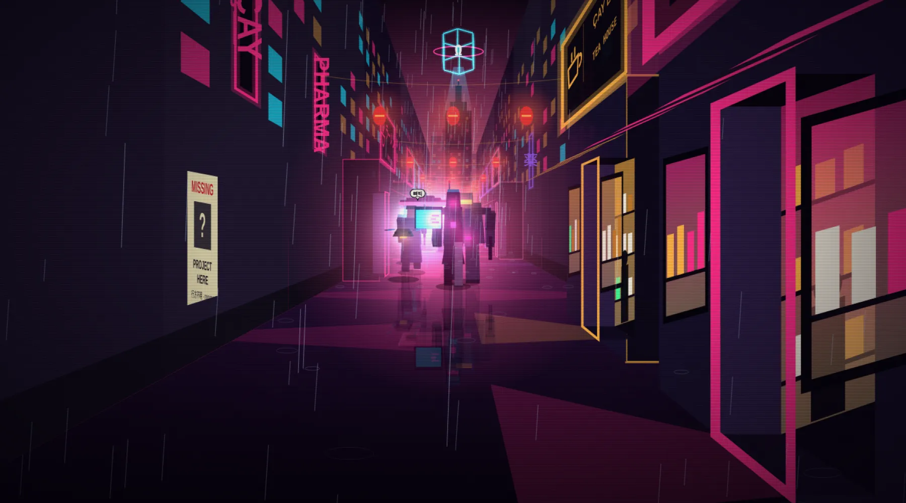
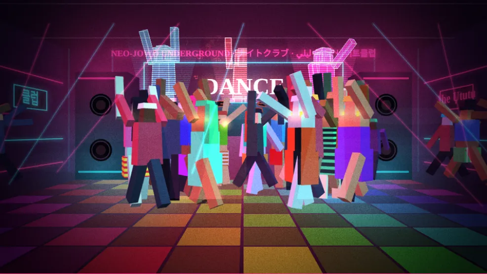
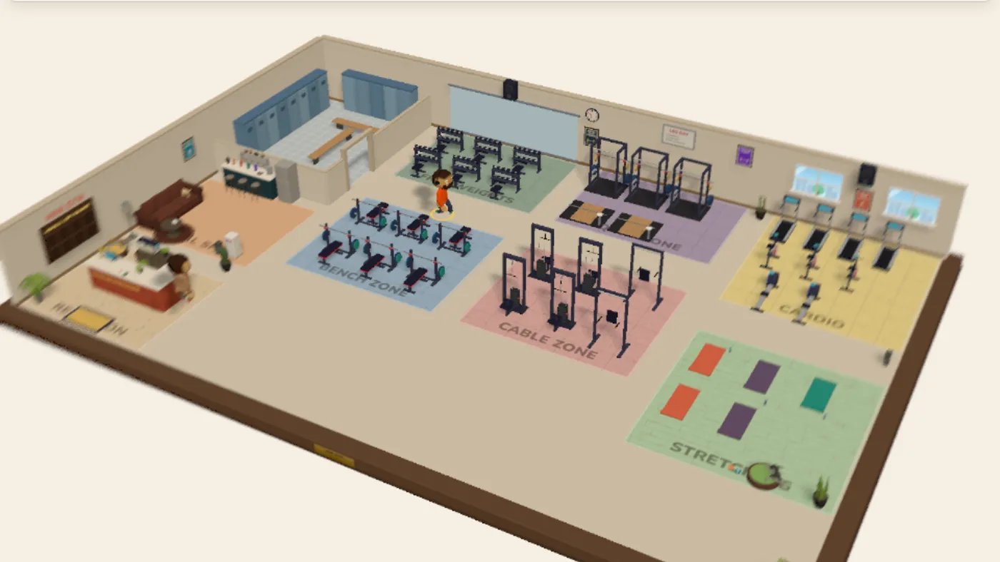
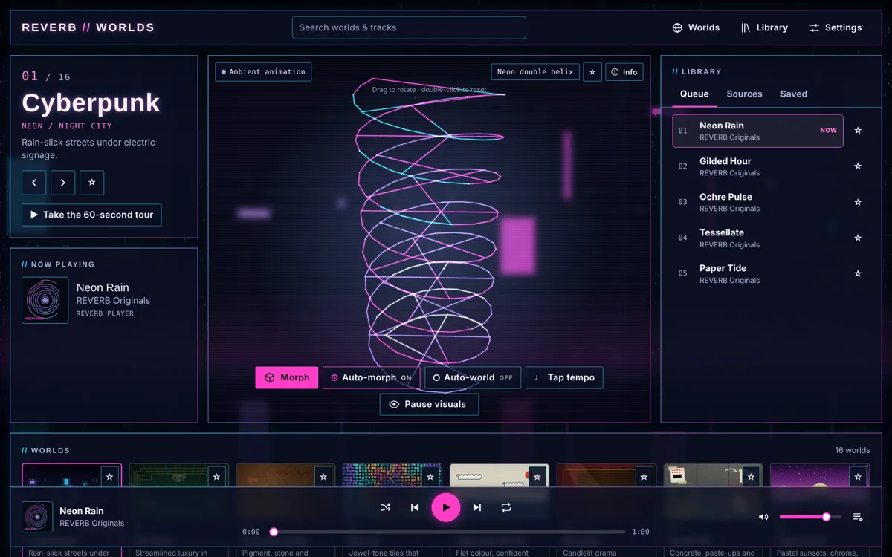
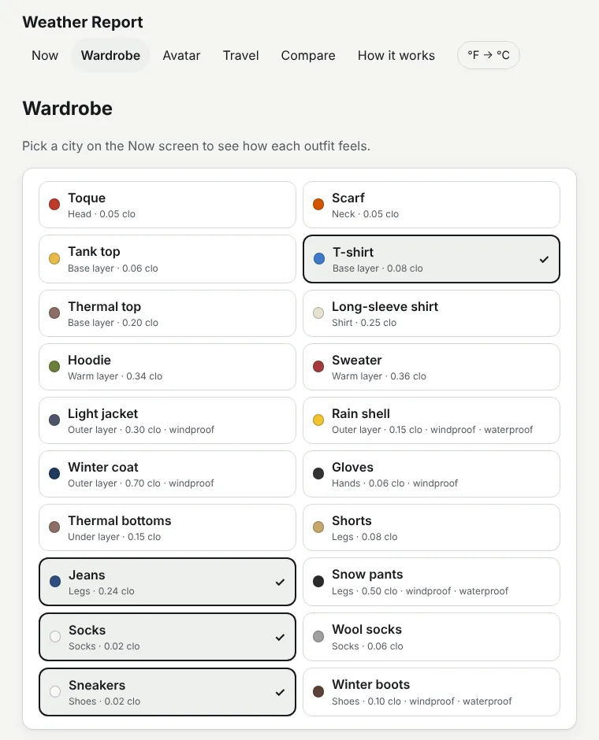

Ejovwo Obahor
Computer science student at Sheridan College, specialising in cloud computing. I build interactive software for the browser: graphics, audio and small simulations.
The street above is one of them. It is drawn live, and the code is on GitHub.
Neo-Jowo OS
A portfolio built as a small operating system inside a living alley. Windows open over the street, strangers walk past with files you can read, and the nightclub at the end plays music that is written as it plays.
- Rendering
- A low-poly 3D renderer I wrote for the 2D canvas. No WebGL and no engine.
- Music
- A synthesiser that generates nine genres of house with the Web Audio API. There are no audio files.
- People
- Simulated passers-by with their own routes, speech and events, including a monster attack.
- Assets
- A pipeline that renders CC0 models with three.js in headless Chromium and packs them into sprite sheets.
- Testing
- Playwright tests run in GitHub Actions on every push.


Mini Gym
Tiny members arrive, change, queue for equipment and train real routines. Moments turn into titles on a Hall of Fame wall. You can make a character and train beside them, on autopilot or one exercise at a time.
TypeScript, React and three.js, built with Vite.

Reverb // Worlds
A music player with sixteen visual worlds and a hologram that moves with the music. Every visual is drawn in code on a 2D canvas, and switching worlds never interrupts playback.
Plain HTML, CSS and JavaScript modules. No build step.

Weather Report
Turns live weather into how it will feel in what you are wearing, with a twenty-garment wardrobe, a 3D avatar and a trip planner.
React, TypeScript and three.js.
Cloud and coursework
- The Maple Table
- A restaurant-menu web app on AWS, built with one partner at Sheridan. A custom VPC with public and private subnets, Apache and PHP on EC2, and two S3 buckets so staff can change prices without touching the server. SSH is locked to a single IP.
- IoT home camera
- A simulated home camera system backed by a Flask REST API, built as a group assignment.
- Ride booking
- The booking module of a group ride-hailing app: the use case diagram and domain model for booking, matching and the trip lifecycle.
Experience
- IJEUser experience engineer · 2022 to now
- I test new features and report three to five bugs a round, and sort five to ten user notes a week into clear categories for the developers.
- Halton Multicultural CouncilAdministrative associate · summer 2025
- Admin and tech requests for senior staff, fixes to the translator database, and over 100 sensitive files scanned and processed without an error.
- William’s Fresh CaféDay shift manager · 2021 to 2023
- Ran shifts for six to ten staff, handled the till and helped train new hires.
About
I like software you can see and hear, and I like writing the parts underneath it myself.
I work in JavaScript and TypeScript, Python, PHP and SQL, HTML and CSS, Canvas 2D, the Web Audio API, three.js, React, Flask and REST APIs, AWS (VPC, EC2, S3), Playwright, Git and GitHub Actions.
Studying for an Honours Bachelor of Science in Computer Science (Cloud Computing) at Sheridan College. I am preparing for the AWS Certified Cloud Practitioner (CLF-C02) exam through LinkedIn Learning (November 2026).
I am looking for co-op and internship roles in software and cloud.
ejovwo.obahor@gmail.com
Every project on this page is public on GitHub. Email is the quickest way to reach me.